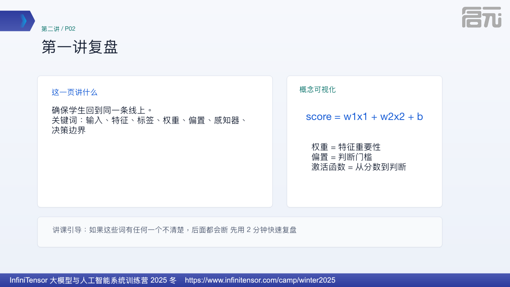
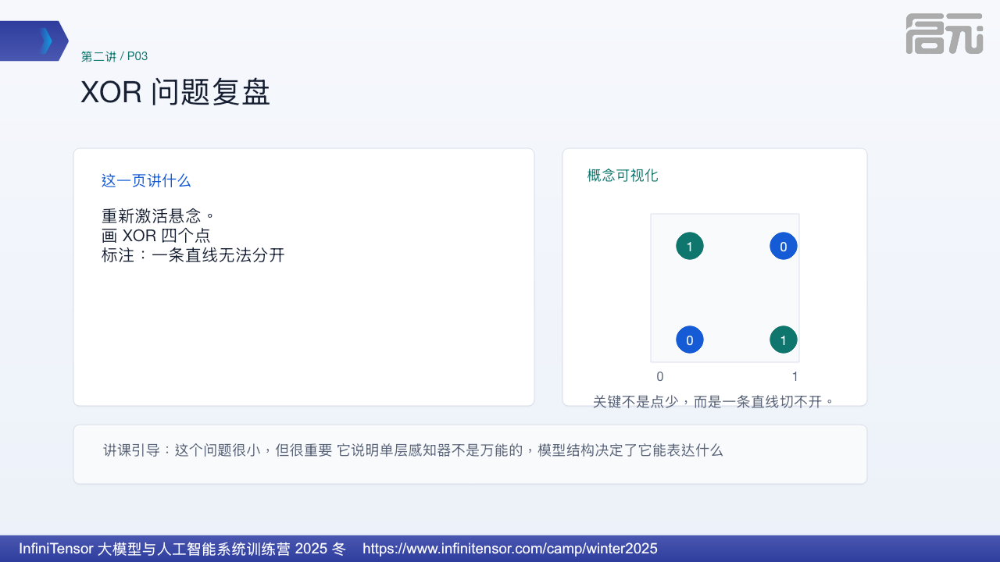
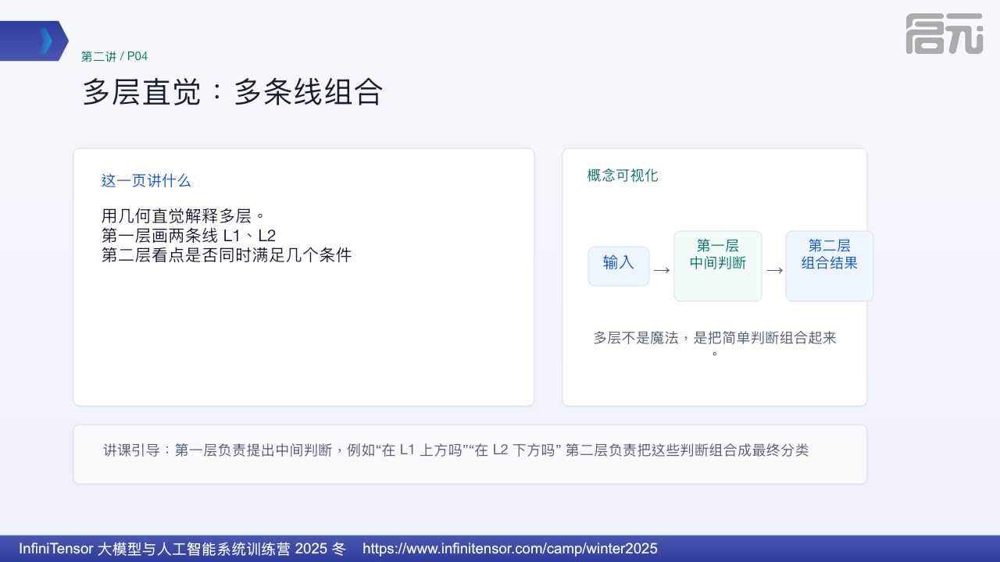
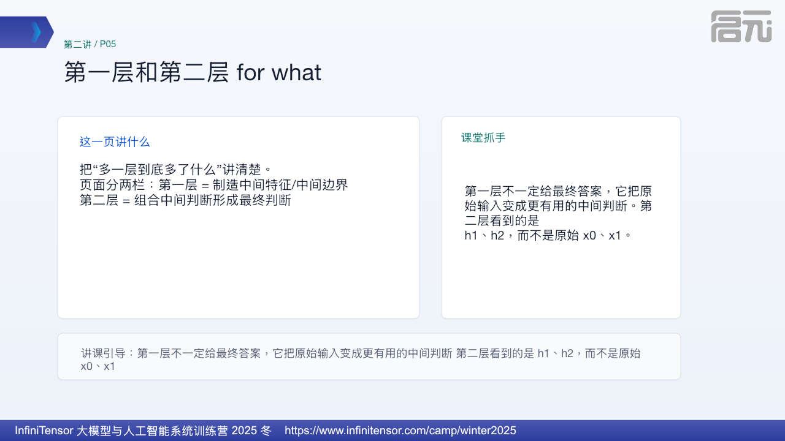
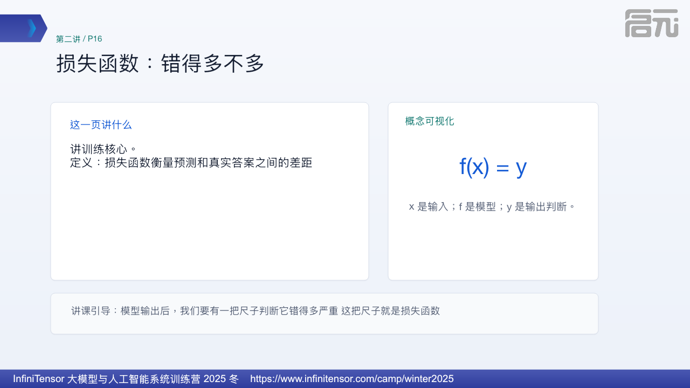
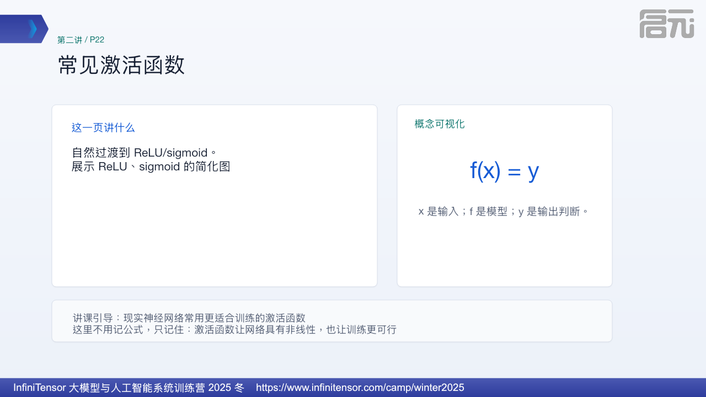

XOR 多层感知器演示
什么时候打开：P03-P06，尤其 P04 讲多层直觉、P06 讲两个隐藏判断组合时打开。
学生应该看到：依次点击步骤，先看 XOR 四个点，再看两条隐藏层判断线，最后看输出层如何把中间判断组合成 XOR。
边界：这是结构表达能力的教学演示，不是真实训练过程，也不是真实硬件时序模拟。
第二讲 · 40-45 分钟
模型如何变复杂、如何训练、如何运行
文件入口：slides.pptx；本页为逐页 HTML 讲课大纲。
第二讲的简化目标是把“模型为什么复杂”和“推理为什么吃硬件”连起来。它不展开严格优化推导，也不把强化学习讲成完整算法课，而是只保留学生后面理解推理系统所需的骨架：多层产生中间表示，训练调整参数，推理固定参数做大量矩阵计算，硬件负责把这些计算高效执行。
什么时候打开：P03-P06，尤其 P04 讲多层直觉、P06 讲两个隐藏判断组合时打开。
学生应该看到：依次点击步骤，先看 XOR 四个点，再看两条隐藏层判断线，最后看输出层如何把中间判断组合成 XOR。
边界：这是结构表达能力的教学演示，不是真实训练过程，也不是真实硬件时序模拟。
什么时候打开：P11 讲图像识别时打开。
学生应该看到：点击展开，看到一张手写数字先变成像素网格，再拉平成输入向量，最后进入 10 类输出分数。
边界：这里演示的是数据表示路径，不代表真实 MNIST 模型只有这几个像素或这几层。
什么时候打开：P30-P31，讲推理核心计算和为什么需要智能芯片时打开。
学生应该看到：点击下一步，观察行列相乘、多个输出格并行计算，以及计算流向加速器阵列。
边界：这是矩阵乘并行直觉演示，不是真实芯片微架构、缓存层级或调度时序。
这一页要解决的问题是：建立第二讲主题。 页面上建议这样放：标题：从多层感知器到训练与推理。副标题：模型如何变复杂、如何训练、如何运行。
讲的时候可以这样展开：上一讲我们停在 XOR：一条线切不开。今天从这个问题出发，看神经网络为什么要多层，以及参数如何被训练出来。

这一页要解决的问题是：确保学生回到同一条线上。 页面上建议这样放：关键词：输入、特征、标签、权重、偏置、感知器、决策边界。
讲的时候可以这样展开：如果这些词有任何一个不清楚，后面都会断。先用 2 分钟快速复盘。

这一页要解决的问题是：重新激活悬念。 页面上建议这样放：画 XOR 四个点。标注：一条直线无法分开。
讲的时候可以这样展开：这个问题很小，但很重要。它说明单层感知器不是万能的，模型结构决定了它能表达什么。
如果要带一点互动，可以这样问：问：如果一条线不够，两条线行不行？
配套演示：可以打开 mlp-xor-demo.html。P03 先让学生承认一条线切不开；P04/P05 再点击隐藏层判断；P06 最后点击输出层组合，让他们看到“多层”不是口号，而是把中间判断重新组合。

这一页要解决的问题是：用几何直觉解释多层。 页面上建议这样放：第一层画两条线 L1、L2；第二层看点是否同时满足几个条件。
讲的时候可以这样展开：第一层负责提出中间判断，例如“在 L1 上方吗”“在 L2 下方吗”。第二层负责把这些判断组合成最终分类。
配套演示：可以打开 mlp-xor-demo.html。P03 先让学生承认一条线切不开；P04/P05 再点击隐藏层判断；P06 最后点击输出层组合，让他们看到“多层”不是口号，而是把中间判断重新组合。

这一页要解决的问题是：把“多一层到底多了什么”讲清楚。 页面上建议这样放：页面分两栏：第一层 = 制造中间特征/中间边界；第二层 = 组合中间判断形成最终判断。
讲的时候可以这样展开：第一层不一定给最终答案，它把原始输入变成更有用的中间判断。第二层看到的是 h1、h2，而不是原始 x0、x1。
这里可以补一句背景：特征变换、中间表示。
配套演示：可以打开 mlp-xor-demo.html。P03 先让学生承认一条线切不开；P04/P05 再点击隐藏层判断；P06 最后点击输出层组合，让他们看到“多层”不是口号，而是把中间判断重新组合。
这一页要解决的问题是：具体讲清多层如何解决 XOR。 页面上建议这样放：用图显示两个隐藏神经元产生两个判断，输出神经元组合。
讲的时候可以这样展开：一条线解决不了，但多个中间判断组合后，可以把空间切成更复杂的区域。
配套演示：可以打开 mlp-xor-demo.html。P03 先让学生承认一条线切不开；P04/P05 再点击隐藏层判断；P06 最后点击输出层组合，让他们看到“多层”不是口号，而是把中间判断重新组合。
这一页要解决的问题是：去神秘化。 页面上建议这样放：一句话：隐藏层是中间表示，不是神秘意识。
讲的时候可以这样展开：隐藏层之所以叫隐藏，是因为训练数据只给输入和输出，中间这些 h1、h2 没有人直接标答案，它们由训练自动形成。
这一页要解决的问题是：解释宽度和深度。 页面上建议这样放：宽度：神经元越多，能制造越多边界；深度：层数越多，能分阶段组合特征。
讲的时候可以这样展开：模型不是堆得越深越神秘，而是表达能力变强，可以把复杂判断拆成多步中间判断。
这一页要解决的问题是：为过拟合埋伏笔。 页面上建议这样放：横轴模型复杂度，纵轴训练表现/测试表现。
讲的时候可以这样展开：模型太简单会学不到，太复杂可能把训练数据记死。能力提升和可靠性不是一回事。
这里可以补一句背景：模型容量、泛化。
这一页要解决的问题是：扩展输出类型并讲标签编码。 页面上建议这样放：二分类：苹果/非苹果。多分类：数字 0-9。one-hot：10 个位置只有一个是 1。
讲的时候可以这样展开：one-hot 就像答题卡，只有正确类别那个格子被标成 1。
这一页要解决的问题是：用经典例子连接神经网络。 页面上建议这样放：每张图是 28×28 矩阵；展开为 784 个输入；输出 10 个类别分数/概率。
讲的时候可以这样展开：这页是从感知器到神经网络最好的例子：输入是像素，输出是数字类别。
配套演示：可以打开 mnist-vector-demo.html。这一页重点不是讲 MNIST 训练细节，而是让学生看见图片如何先变成像素数字，再作为模型输入，最后变成类别分数。
这一页要解决的问题是：解释模型输出不是绝对真理。 页面上建议这样放：概率向量 → argmax → 类别。例：数字 3 的概率最高，则输出 3。
讲的时候可以这样展开：模型很多时候不是直接给真理，而是给每个类别一个分数或概率。argmax 就是选择最大值的位置。
这一页要解决的问题是：补统计学基础。 页面上建议这样放：画两堆数据：训练集用于学习，测试集用于考试。
讲的时候可以这样展开：不能用同一套题又训练又考试。训练集准不代表模型真的会，测试集表现才更接近泛化能力。
这一页要解决的问题是：解释模型学习规律和模型太简单。 页面上建议这样放：例子：学习时间和考试分数。趋势线表示拟合；水平线表示欠拟合。
讲的时候可以这样展开：拟合就是模型试图贴近数据规律。欠拟合就是模型太简单，连基本趋势都学不到。
这里可以补一句背景：拟合、欠拟合。
这一页要解决的问题是：解释模型太复杂。 页面上建议这样放：图：曲线穿过每个训练点，但新点预测很差。
讲的时候可以这样展开：过拟合就是模型把训练数据的偶然细节也记住了。训练集很好，新数据不一定好。

这一页要解决的问题是：讲训练核心。 页面上建议这样放：定义：损失函数衡量预测和真实答案之间的差距。
讲的时候可以这样展开：模型输出后，我们要有一把尺子判断它错得多严重。这把尺子就是损失函数。
这一页要解决的问题是：用简单数值例子讲损失。 页面上建议这样放：真实 80，预测 75，误差 5；真实 80，预测 40，误差 40。
讲的时候可以这样展开：误差越大，损失越大。这里不必展开 MSE 公式，只让学生明白损失是可计算的错误程度。
这里可以补一句背景：误差、回归、损失。
这一页要解决的问题是：讲分类也有损失。 页面上建议这样放：正确答案是 3；模型给 3 的概率很低、给 8 的概率很高，则损失大。
讲的时候可以这样展开：分类任务中，不是只看最后猜没猜对，还要看模型给正确类别的信心。
这一页要解决的问题是：连接参数更新。 页面上建议这样放：图：参数 → 预测 → 损失 → 更新参数 → 再预测。
讲的时候可以这样展开：训练就是不断调整权重和偏置，让损失下降。模型不是一次就会，而是在很多样本上反复修正。
这一页要解决的问题是：用直觉讲优化。 页面上建议这样放：图：损失像山谷；参数像位置；梯度指方向。
讲的时候可以这样展开：参数像一堆旋钮。梯度告诉我们每个旋钮往哪个方向拧，损失会小一点。学习率决定每次拧多少。
这里可以补一句背景：梯度、学习率、优化。
这一页要解决的问题是：解释可导的重要性。 页面上建议这样放：sgn 阶跃图；旁边写：大部分地方导数为 0。
讲的时候可以这样展开：硬阈值很适合理解分类，但不适合训练。梯度下降需要知道参数变一点，损失会怎么变；sgn 很难提供这个信息。

这一页要解决的问题是：自然过渡到 ReLU/sigmoid。 页面上建议这样放：展示 ReLU、sigmoid 的简化图。
讲的时候可以这样展开：现实神经网络常用更适合训练的激活函数。这里不用记公式，只记住：激活函数让网络具有非线性，也让训练更可行。
这一页要解决的问题是：引入强化学习，保持趣味。 页面上建议这样放：画贪吃蛇：状态 = 蛇位置/食物/墙；动作 = 上下左右；奖励 = 吃到食物加分，撞墙扣分。
讲的时候可以这样展开：图像分类有标准答案，贪吃蛇每一步未必有唯一标准答案。它关心的是长期结果：最后能不能活得久、吃得多。
如果要带一点互动，可以这样问：问：向上走这一步好不好？只看当前一步够不够？
这一页要解决的问题是：区分损失与奖励。 页面上建议这样放：监督学习：预测 vs 标准答案。强化学习：动作 → 奖励 → 长期回报。
讲的时候可以这样展开：贪吃蛇不是每一步都有老师告诉它正确答案。它通过奖励学习：吃到食物是好信号，撞墙是坏信号。很多算法会把预测回报和实际回报之间的差距变成损失来训练。
这里可以补一句背景：强化学习、奖励、回报、TD error 只作直觉，不推公式。
这一页要解决的问题是：把 AlphaGo 讲得更准确。 页面上建议这样放：两个概念：策略 = 下一步下哪里；价值 = 当前局面赢的概率。
讲的时候可以这样展开：AlphaGo 不是简单背棋谱。它要评估局面、选择动作，并通过自我对弈改进。最终目标不是像人，而是提高赢棋概率。
这一页要解决的问题是：回应“损失算法”问题。 页面上建议这样放：页面分两栏：监督阶段：模仿高手棋谱；强化阶段：自我对弈，以胜负和局面价值改进。
讲的时候可以这样展开：在监督学习阶段，可以用“预测下一步和高手下一步差多少”训练策略。在强化学习阶段，更关注动作是否提高长期胜率。这里的学习信号来自胜负和价值估计。
这一页要解决的问题是：连接深度网络结构。 页面上建议这样放：图像适合 CNN；序列适合 RNN/Transformer；结构帮助模型更少参数捕捉特征。
讲的时候可以这样展开：结构不是装饰。它相当于把任务特点写进模型，让模型更容易学习。
这里要收住说法：CNN、RNN、Transformer 的重点是给任务提供合适的归纳偏置或计算路径，不能简单说成所有结构都只是为了“更少参数”。
这一页要解决的问题是：解释为什么需要工程结构。 页面上建议这样放：问题：信息损失、数值不稳定。残差：给信息一条旁路。归一化：把数值拉回稳定范围。
讲的时候可以这样展开：网络变深后，不是简单堆层就行。残差让前面层的信息可以继续传下去；归一化让每层数值不要越来越偏。
这一页要解决的问题是：从训练转到推理。 页面上建议这样放：训练：调参数。推理：参数固定后，根据新输入算输出。
讲的时候可以这样展开：模型训练好以后，推理阶段不会再学习，只是用已经学好的参数做计算。
这一页要把训练和推理分开：训练是在改参数、看损失、再更新；推理是在参数固定后接收输入并输出结果。后面讲芯片时接的是推理这条线。
这一页要解决的问题是：解释硬件基础。 页面上建议这样放：Y = XW^T + b；很多神经元一起算就是矩阵乘。
讲的时候可以这样展开：一个神经元是加权求和，很多神经元、很多样本一起算，就变成矩阵乘。大模型最耗时的计算很大一部分就在这里。
配套演示：可以打开 matrix-parallel-demo.html。P30 用它看行列相乘和累加，P31 用它过渡到并行阵列、内存搬运和吞吐，而不是把智能芯片讲成“负责训练调参数”。
这一页要解决的问题是：连接到系统和硬件。 页面上建议这样放：参数千亿级；需要内存；需要并行算力；GPU/NPU/AI 芯片。
讲的时候可以这样展开：模型不是云里的魔法。参数要存在内存里，推理要做大量矩阵运算，所以硬件和并行计算非常重要。
讲授时要收住边界：这里是在建立教学定义和工程直觉，不把它说成哲学或认知科学上的最终结论。
配套演示：可以打开 matrix-parallel-demo.html。P30 用它看行列相乘和累加，P31 用它过渡到并行阵列、内存搬运和吞吐，而不是把智能芯片讲成“负责训练调参数”。
这一页要解决的问题是：闭环并注入边界。 页面上建议这样放：总结链条：多层 → 复杂边界；损失 → 错误度量；梯度 → 参数更新；奖励 → 长期目标；推理 → 矩阵计算。
讲的时候可以这样展开：学 AI 不是为了崇拜模型，也不是为了害怕被替代，而是看清楚它每一层在做什么。模型会拟合，不代表理解；损失低，也不代表所有场景可靠。
讲授时要收住边界：这里是在建立教学定义和工程直觉，不把它说成哲学或认知科学上的最终结论。
来源：第二讲_从多层感知器到训练与推理_课程文档.docx；原始 32 页 PDF 和 291MB 视频只作为源材料参考，不放入这个干净发布包。